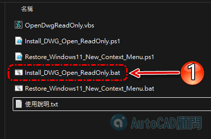
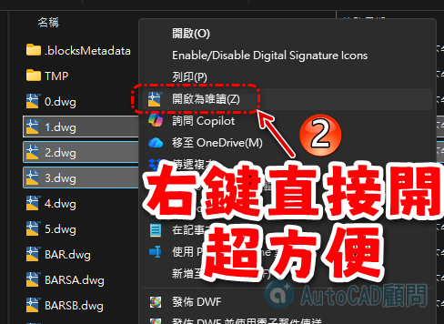

使用說明：
1. 執行 "Install_DWG_Open_ReadOnly.bat"
2. 安裝完成後，檔案總管會重新啟動
3. 對 ".dwg" 檔案按右鍵
4. 點選「開啟為唯讀(&Z)」
5. AutoCAD 會以唯讀方式開啟該 DWG
補充：
- 此功能會把 Windows 11 右鍵選單切換成傳統右鍵選單。
- 若要恢復 Windows 11 新版右鍵選單，執行 "Restore_Windows11_New_Context_Menu.bat"。
- 實際唯讀開啟是透過 AutoCAD 的 "Documents.Open 檔案, True" 完成。
--------------------------
😁支持我們製作更多優質教學
--------------------------